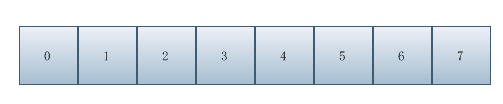

基于FFmpeg的Dxva2硬解码及Direct3D显示（三）
初始化Direct3D
Direct3D渲染可以通过Surface和Texture来实现，后者比较复杂，只是显示视频的化用Surface足以。Direct3D有几个重要的概念需要说明以下：
Device：就是渲染设备实例
Resources：可以理解成一个参数结构体，描述怎样渲染的细节。
Swap Chains：交换链，由一个或者多个缓冲区组成，可以理解成包含多个缓冲区的数组，如下图所示。

创建Direct3D物理设备对象实例
这一步为了得到IDirect3D9* 实例 m_pD3d9;
m_hD3dDll = LoadLibrary("d3d9.dll");pDirect3DCreate9 *createD3D = (pDirect3DCreate9 *)GetProcAddress(m_hD3dDll, "Direct3DCreate9");m_pD3d9 = createD3D(D3D_SDK_VERSION);// 怎样指定GPU？
创建Direct3D渲染设备实例
这一步为了得到IDirect3DDevice9* 实例 m_pD3d9Dev;
// 获取显示适配器参数D3DDISPLAYMODE displayModel;if (m_pD3d9->GetAdapterDisplayMode(D3DADAPTER_DEFAULT, &displayModel) < 0){return FALSE;}D3DPRESENT_PARAMETERS presentParms = { 0 };presentParms.Windowed = TRUE; // 是否窗口显示presentParms.BackBufferCount = 0; // 后台缓冲表面数量，指定为0时会被视为1presentParms.hDeviceWindow = m_hWnd; // 显示窗口句柄presentParms.SwapEffect = D3DSWAPEFFECT_DISCARD; // 交换链设置，后台缓冲使用后直接丢弃presentParms.BackBufferFormat = displayModel.Format;// 后台缓冲表面格式presentParms.EnableAutoDepthStencil = FALSE; // 是否自动创建深度模板缓冲，适用于3D场景presentParms.Flags = D3DPRESENTFLAG_VIDEO; // 附加特性，显示视频presentParms.FullScreen_RefreshRateInHz = D3DPRESENT_RATE_DEFAULT; // 刷新率，窗口模式时必须为0presentParms.PresentationInterval = D3DPRESENT_INTERVAL_DEFAULT; // 前后台缓冲区的交换频率// 查询设备是否支持硬件加速渲染DWORD behaviorFlags = D3DCREATE_SOFTWARE_VERTEXPROCESSING | D3DCREATE_MULTITHREADED;D3DDEVTYPE devType = D3DDEVTYPE_HAL;D3DCAPS9 caps;if (m_pD3d9->GetDeviceCaps(D3DADAPTER_DEFAULT, devType, &caps) >= 0){if (caps.DevCaps & D3DDEVCAPS_HWTRANSFORMANDLIGHT){behaviorFlags = D3DCREATE_HARDWARE_VERTEXPROCESSING | D3DCREATE_MULTITHREADED | D3DCREATE_FPU_PRESERVE;}else{behaviorFlags = D3DCREATE_SOFTWARE_VERTEXPROCESSING | D3DCREATE_MULTITHREADED | D3DCREATE_FPU_PRESERVE;}}else{return FALSE;}// 创建渲染设备实例if (m_pD3d9->CreateDevice(D3DADAPTER_DEFAULT, devType, m_hWnd,behaviorFlags, &presentParms, &m_pD3d9Dev) < 0){return FALSE;}
创建Direct3D视频解码服务
这一步为了得到IDirectXVideoDecoderService* 实例 m_pDecoderService;
m_hDxva2Dll = LoadLibrary("dxva2.dll");if (!m_hDxva2Dll){return FALSE;}pCreateDeviceManager9 *createDeviceManager = (pCreateDeviceManager9 *)GetProcAddress(m_hDxva2Dll, "DXVA2CreateDirect3DDeviceManager9");// 设备管理器实例标识unsigned resetToken = 0;if (createDeviceManager(&resetToken, &m_pD3d9DevMgr) < 0){return FALSE;}// 重置渲染设备HRESULT hr = m_pD3d9DevMgr->ResetDevice(m_pD3d9Dev, resetToken);if (FAILED(hr)){return FALSE;}// 打开渲染设备hr = m_pD3d9DevMgr->OpenDeviceHandle(&m_hDev);if (FAILED(hr)){return FALSE;}// 获取视频渲染服务实例hr = m_pD3d9DevMgr->GetVideoService(m_hDev, IID_IDirectXVideoDecoderService, (void **)&m_pDecoderService);if (FAILED(hr)){return FALSE;}
基于FFmpeg的Dxva2硬解码及Direct3D显示（三）的更多相关文章
- 基于FFmpeg的Dxva2硬解码及Direct3D显示（四）
初始化硬解码上下文 目录 初始化硬解码上下文 创建解码数据缓冲区 创建IDirectXVideoDecoder视频解码器 设置硬解码上下文 解码回调函数 创建解码数据缓冲区 这一步为了得到 LPDIR ...
- 基于FFmpeg的Dxva2硬解码及Direct3D显示（一）
目录 前言 名词解释 代码实现逻辑 前言 关于视频软解码的资料网上比较多了,但是关于硬解可供参考的资料非常之有限,虽然总得来说软解和硬解的基本逻辑一样,但是实现细节上的差别还是比较多的.虽然目前功能已 ...
- 基于FFmpeg的Dxva2硬解码及Direct3D显示（五）
解码及显示 目录 解码及显示 解码 显示 资源清理 解码 循环读取视频帧 AVPacket packet = { 0 }; while (av_read_frame(m_pFmtCtx, &p ...
- 基于FFmpeg的Dxva2硬解码及Direct3D显示（二）
解析视频源 目录 解析视频源 获取视频流 解析视频流 说明:这篇博文分为"获取视频流"和"解析视频流"两个部分,使用的是FFmpeg4.1的版本,与网上流传的低 ...
- 使用C#+FFmpeg+DirectX+dxva2硬件解码播放h264流
本文门槛较高,因此行文看起来会乱一些,如果你看到某处能会心一笑请马上联系我开始摆龙门阵 如果你跟随这篇文章实现了播放器,那你会得到一个高效率,低cpu占用(单路720p视频解码播放占用1%左右cpu) ...
- 【视频开发】 ffmpeg支持的硬解码接口
To enable DXVA2, use the --enable-dxva2 ffmpeg configure switch. To test decoding, use the following ...
- [原]ffmpeg编译android 硬解码支持库 libstagefright
最近花了一天时间将ffmpeg/tools/build_stagefright执行成功,主要是交叉编译所需要的各种动态库的支持没链接上,导致各种报错,基本上网络上问到的问题我都碰到了,特此记录下来. ...
- 【并行计算与CUDA开发】基于NVIDIA显卡的硬编解码的一点心得 （完结）
原文:基于NVIDIA显卡的硬编解码的一点心得 (完结) 1.硬解码软编码方法:大体流程,先用ffmpeg来读取视频文件的包,接着开启两个线程,一个用于硬解码,一个用于软编码,然后将读取的包传给解码器 ...
- 最简单的基于FFMPEG的封装格式转换器（无编解码）
本文介绍一个基于FFMPEG的封装格式转换器.所谓的封装格式转换,就是在AVI,FLV,MKV,MP4这些格式之间转换(相应.avi,.flv,.mkv,.mp4文件).须要注意的是,本程序并不进行视 ...
随机推荐
- vim的高亮查找操作
使用了VIM这么久,却一直无法牢记一些基本的操作指令.今天查找一个关键字时,想不起来怎么查找“下一个”,于是google之并解决,顺便把有用的都贴过来罢. 查找指令:/xxx 往下查找?xxx 往上 ...
- Visual Studio 下C#编译器在解析属性名时如果增加一个get_[您的另一个已经包含在类中属性名]的属性会报错，微软大哥这是什么鬼？
假设在在我们的vs环境新建一个类 copy以下代码,表面看好像一切都没有问题. using System; using System.Collections.Generic; using System ...
- Intellij Idea 配置database 连接SQL Server 2012
首先确认通过TCP IP来连接连接SQLServer 2012 确保 Server Authentication选择了SQL Server and Windows Authentication ...
- poj1207
The 3n + 1 problem Time Limit: 1000MS Memory Limit: 10000K Total Submissions: 50513 Accepted: 15 ...
- Session（）
如何使用 Session Java Api 只给我们一种方式来 获取 当前会话相关的 session: HttpSession session = request.getSession(); //或 ...
- 《Java2 实用教程（第五版）》教学进程
目录 <Java2 实用教程(第五版)>教学进程 预备作业1:你期望的师生关系是什么? 预备作业2 :学习基础和C语言基础调查 预备作业3:Linux安装及命令入门 第一周作业 第二周作业 ...
- 617A
#include <stdio.h> int main() { int moves[5]={1,2,3,4,5}; int x; scanf("%d", &x) ...
- Servlet开发的三种方法
第一种 实现 Servlet 接口,需要覆写 Servlet 的5个方法,并将ServletConfig对象保存到类级变量中 package app01a; import java.io.IOExce ...
- Python--进阶处理9
# =========================第九章:元编程============================= # ----------------在函数上添加包装器--------- ...
- C语言数据结构-链式栈的实现-初始化、销毁、长度、取栈顶元素、查找、入栈、出栈、显示操作
1.数据结构-链式栈的实现-C语言 //链式栈的链式结构 typedef struct StackNode { int data; struct StackNode *next; } StackNod ...